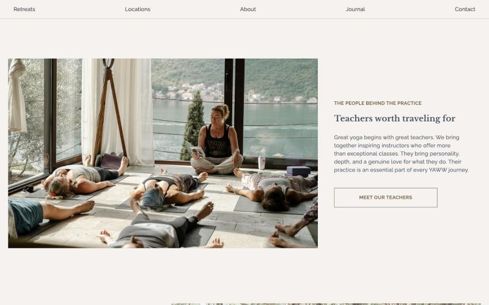
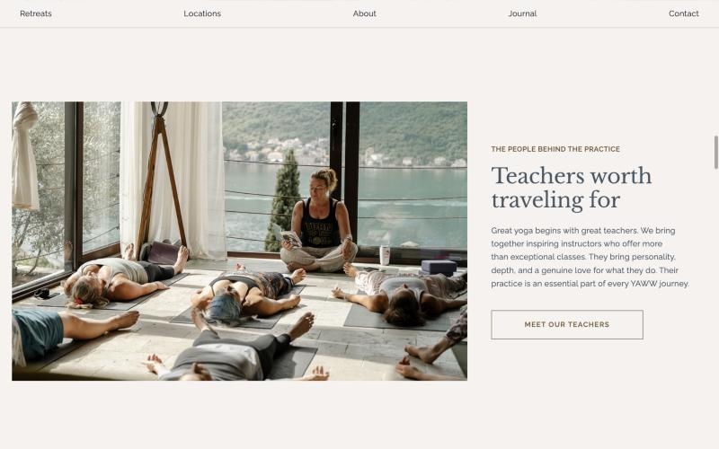
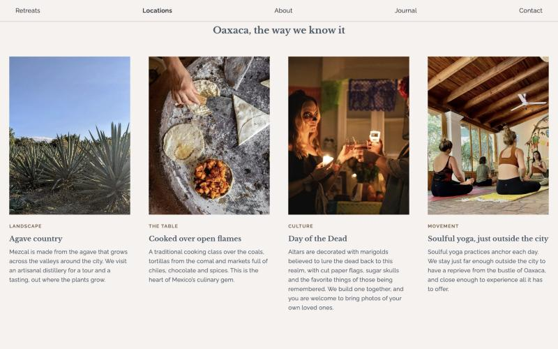
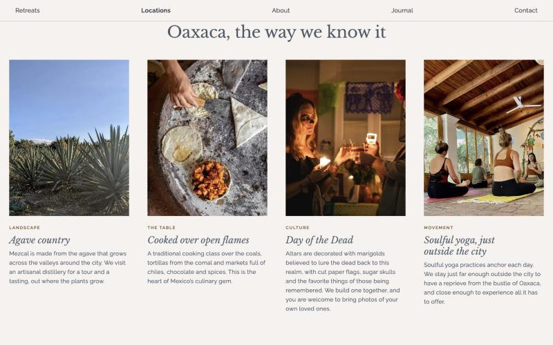

Proposal · Brief 12.12 · Typography
If the premium version is a 10 for typographic expression and the live site a 1, this is a 5. Same layouts, grids and colours. Only the type changes: a real scale between levels, Baskerville Regular for titles instead of a 24px bold everywhere, italic kept for a few moments, opened-up eyebrows, and the small things (balanced titles, hanging quotes).
Each page is a copy of the live one with type.css loaded last. The dark switch on the right (bottom right on a phone) turns the proposal on and off; T does the same, and ?type=off opens a page with it off.
Before and after




Specimen
Sizes are fluid between a 390px phone and a 1440px desktop. Today the site has one heading size (24px bold) doing six jobs; the gap between the hero and a section title is 56 to 24. Here it is 68 to 30 to 22, and weight changes with it: big type is Regular, only small named things stay Bold.
Travel that moves you
Inner Glow Retreat
Where we’re going next
Your next week away starts here
Cooked over open flames
Shared Tower Room
“Christina and her crew are magic travel masters. I would think of something and it would appear.”
The people behind the practice
Tucked along the quiet edge of the Yucatán, El Cuyo is where time slows to the rhythm of the sea.
Yoga Adventures Worldwide started in 2008 on the beaches of Tulum, Mexico. Back then, it was just a simple idea: to bring like-minded people together in beautiful places, with space to move, rest, and reconnect.
Rules
sought-after).font-variant: small-caps): neither font has real ones, so the browser draws thin shrunken capitals. Use caps with tracking.Inventory
| Element | Now | Proposal |
|---|---|---|
| Home hero | Italic 64 @1440 | Italic 68, −0.02em |
| Retreat / location hero | Regular 56 | Regular 68 (36 on a phone) |
| Hero line under the name | Italic 22 | Italic 23, softer leading |
| Hero proof values | Raleway 14 bold | Baskerville italic 18 |
| About h1 | Bold 36 | Italic 42 (a sentence) |
| Section titles, all h2 | Bold 24 | Regular 30 |
| Lyric h2 (Oaxaca intro, CTA band) | Italic 36 | Italic 42 |
| Tier headlines, guide pillars, About cards | Italic 24 / Bold 18–20 | Italic 22–24 |
| Day N | Italic 22 | Italic 26 |
| Prices, review score | Bold 28 / Raleway 20 | Baskerville Regular / italic |
| Quotes | Italic 17–20 | Italic 21–23, hanging quote; Oaxaca 36 |
| Eyebrows (5 variants) | 11–14px, 0.04–0.14em | One: 12–13px, 0.16em |
| Prose | 16 / 24 | 16 / 26.4; ledes 18 / 29 |
| Buttons, tabs, labels | caps, 0.04em | caps, 0.1em (same size) |